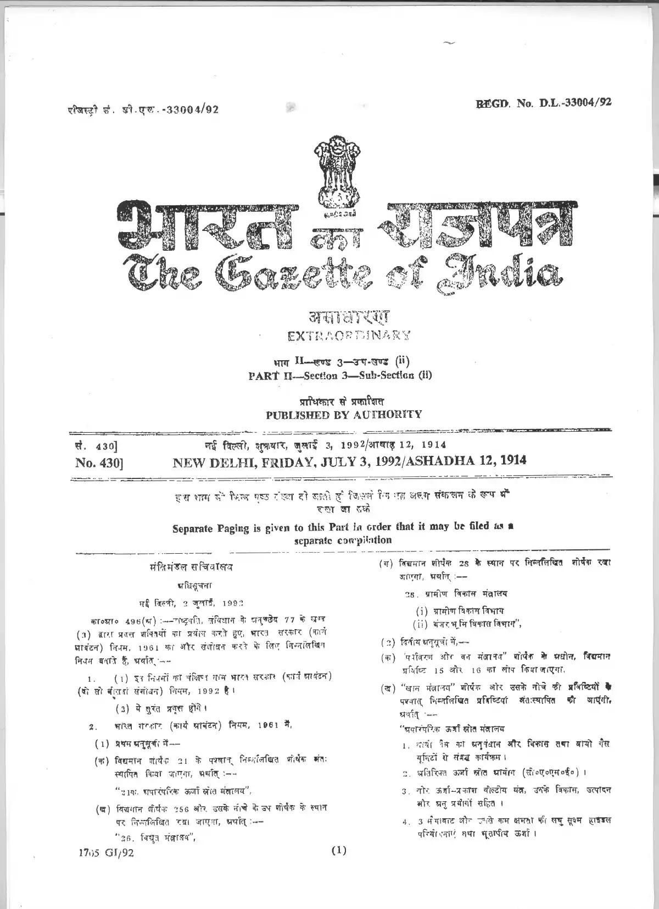
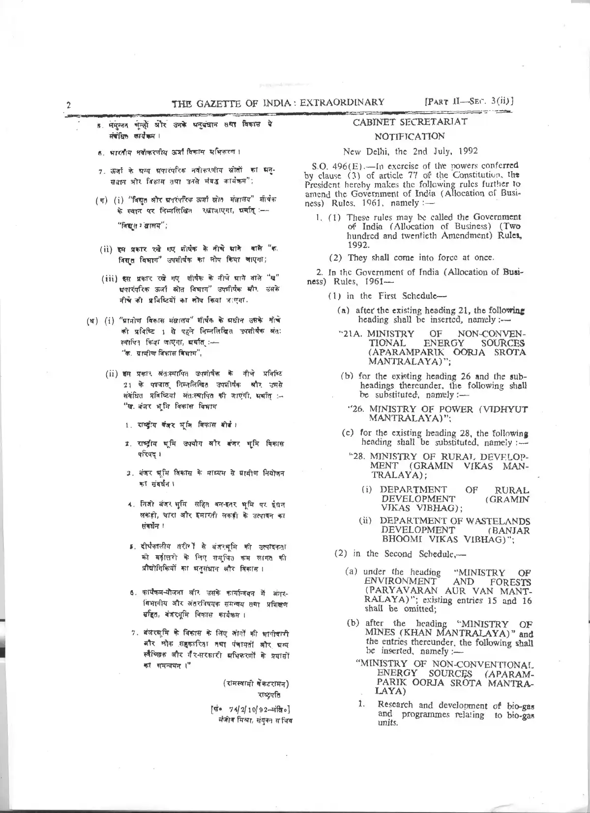
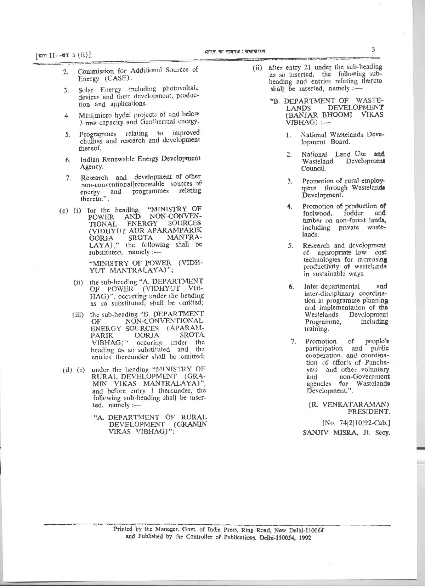

Amendment #220 (S.O. 496(E), 1992)
10 changes: 3 to the First Schedule, 7 to the Second Schedule. 10 applied
What it did to the ministries
- splitMinistry of Power and Non-Conventional Energy Sources splits into Ministry of Power (16) and Ministry of Non-conventional Energy Sources (5) change 1, 2, 5, 6, 7, 8 · histories: Power and Non-Conventional Energy Sources, Power, New and Renewable Energy
- grewMinistry of Rural Development grows from 21 to 27 subjects change 3, 6, 7, 8, 9, 10 · histories: Rural Development
The order, page by page
Page 1 of 3

Page 2 of 3

12345after Schedule 1 › entry 21
- 21A. MINISTRY OF NON-CONVEN- TIONAL ENERGY SOURCES
applied at schedule 1 › ministry 21A in the Rules after #220
Schedule 1 › entry 26
- 26. MINISTRY OF POWER
applied at schedule 1 › ministry 26 in the Rules after #220
new hindi differs
Schedule 1 › entry 28
- 28. MINISTRY OF RURAL DEVELOP- MENT (GRAMIN VIKAS MAN- TRALAYA)
- i. DEPARTMENT OF RURAL DEVELOPMENT
- ii. DEPARTMENT OF WASTELANDS DEVELOPMENT
applied at schedule 1 › ministry 28 in the Rules after #220
Schedule 2 › MINISTRY OF ENVIRONMENT AND FORESTS › entry 15; Schedule 2 › MINISTRY OF ENVIRONMENT AND FORESTS › entry 16
applied at schedule 2 › ministry MINISTRY OF ENVIRONMENT AND FORESTS › entry 15 in the Rules after #220
after Schedule 2 › MINISTRY OF MINES
- MINISTRY OF NON-CONVENTIONAL ENERGY SOURCES (APARAM- PARIK OORJA SROTA MANTRA- LAYA)
- 1. Research and development of bio-gas and programmes relating to bio-gas units. 3 [ भाग II - - बड 3 (ii) ]
- 2. Commission for Additional Sources of Energy (CASE).
- 3. Solar Energy including photovoltaic devices and their development, production and applications.
- 4. Mini micro hydel projects of and below 3 mw capacity and Geothermal energy.
- 5. Programmes relating to improved chulhas and rescarch and development thereof.
and 2 more
- 6. Indian Renewable Energy Development Agency.
- 7. Research and development of other non-conventional renewable sources of energy and programmes relating thereto.
applied at schedule 2 › ministry MINISTRY OF NON-CONVENTIONAL ENERGY SOURCES (APARAM- PARIK OORJA SROTA MANTRA- LAYA) in the Rules after #220
read page break
Page 3 of 3

678910Schedule 2 › MINISTRY OF POWER AND NON-CONVENTIONAL ENERGY SOURCES
- MINISTRY OF POWER
applied at schedule 2 › ministry MINISTRY OF POWER in the Rules after #220
Schedule 2 › MINISTRY OF POWER › DEPARTMENT OF POWER
applied at schedule 2 › ministry MINISTRY OF POWER › department A in the Rules after #220
Schedule 2 › MINISTRY OF POWER › DEPARTMENT OF NON-CONVENTIONAL ENERGY SOURCES
applied at schedule 2 › ministry MINISTRY OF POWER › department B in the Rules after #220
before Schedule 2 › MINISTRY OF RURAL DEVELOPMENT › entry 1
- A. DEPARTMENT OF RURAL DEVELOPMENT
applied at schedule 2 › ministry MINISTRY OF RURAL DEVELOPMENT › department A in the Rules after #220
after Schedule 2 › MINISTRY OF RURAL DEVELOPMENT › DEPARTMENT OF RURAL DEVELOPMENT › entry 21
- B. DEPARTMENT OF WASTE- LANDS DEVELOPMENT (BANJAR BHOOMI VIKAS VIBHAG) -
- 1. National Wastelands Development Board.
- 2. National Land Use and Wasteland Development Council.
- 3. Promotion of rural employment through Wastelands Development.
- 4. Promotion of production of fuelwood, fodder and timber on non-forest lands including private wastelands. .५ Research and development of appropriate low cost technologies for increasing productivity of wastelands in sustainable ways.
- 6. Inter-departmental and inter-disciplinary coordination in programme planning and implementation of the Wastelands Development Programme including training.
and 1 more
- 7. Promotion of people's participation and public cooperation, and coordination of efforts of Panchayats and other voluntary and non-Government agencies for Wastelands Development.
applied at schedule 2 › ministry MINISTRY OF RURAL DEVELOPMENT › department A › entry 21 in the Rules after #220
How this document was read
From the Government of India (Allocation of Business) Rules, 1961 and their amendments, as published by the Cabinet Secretariat (cabsec.gov.in), read by orgpedia. The readings of the older scanned gazettes have known gaps.